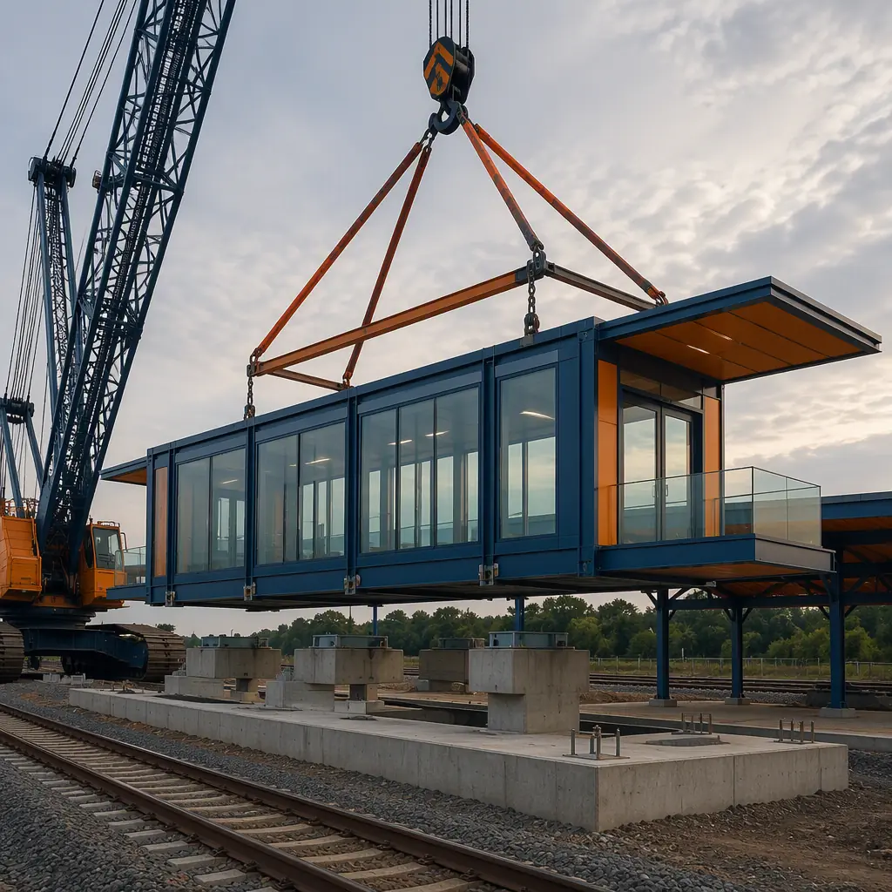
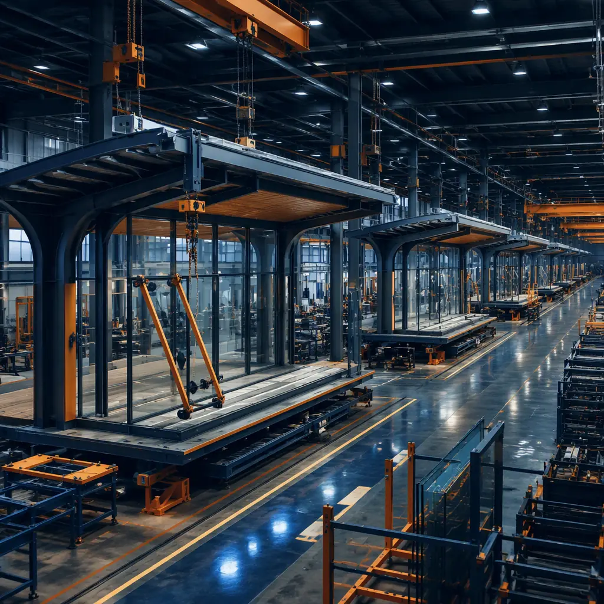
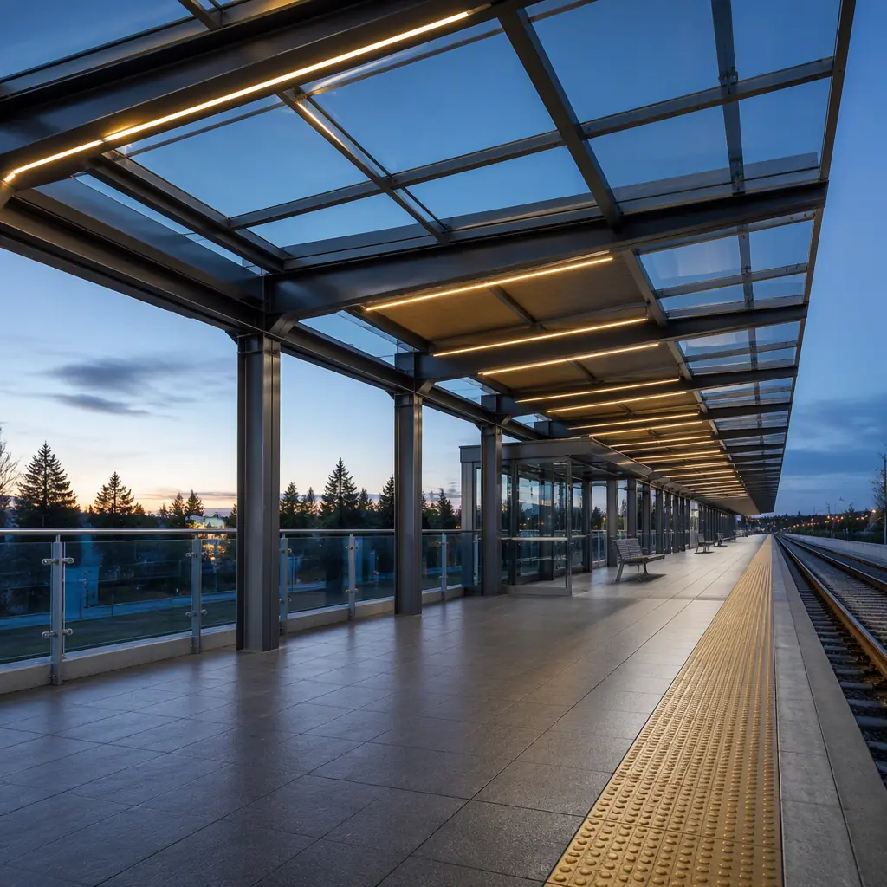

A transit station is the most schedule-constrained building in public infrastructure. It sits inside a live rail corridor where track outages are measured in hours, not weeks; it must satisfy ADA requirements, NFPA 130 fire and life safety rules, and the host railroad's own design standards; and its construction windows are dictated by train schedules that will not move for the contractor. That is why transit agencies are increasingly specifying factory-built station buildings: the waiting rooms, operator shelters, ticketing modules, and platform enclosures are manufactured off-site while the track work proceeds, then set into place during 1–3 night outages instead of months of daytime work zones. This guide explains the transit station building program, how modular delivery satisfies the code, ADA, and operations requirements that define it, and what agencies and P3 developers should specify before they procure.

Why Transit Agencies Are Specifying Modular Stations
Three forces are driving the shift to factory-built transit stations. First, construction windows: a conventional station building takes 6–12 months of on-site work, most of it inside or immediately adjacent to the track envelope, forcing lengthy service disruptions or expensive night-shift premium labor. A modular station is built indoors, and the on-site work shrinks to foundation, utilities, and a set window of one to three nights — the same philosophy that lets transit agencies deliver bus depots and maintenance facilities without disrupting live operations, covered in our modular transit facility and bus depot guide. Second, standardization: transit agencies operate fleets of stations with repeating requirements — the same waiting room, the same operator module, the same ticketing layout — and repetition is exactly what factory production does best. Third, federal and state funding cycles reward committed schedules: agencies that can show a fixed opening date and a fixed cost are more competitive for FTA and state capital grants.
Modular also matches the way transit projects are actually delivered. The station building can be designed and manufactured in parallel with the track, platform, and utility work, collapsing the project critical path. The quality-gate discipline that makes factory production reliable — documented inspections at every stage of production — is the same system MODURA applies across all building types, covered in our factory quality control guide, and the procurement framework for performance-based public delivery is covered in our modular RFP and procurement guide.
The Station Building Program: Modules, Platforms, and Passenger Flow
A light rail or commuter rail station is a compact building program with strict operational requirements. The standard program breaks down as follows:
- Waiting room / passenger shelter. 400–1,200 sq ft of heated, weather-protected waiting space with seating, wayfinding, and real-time arrival displays — sized to ridership and climate, with structural glass or glazed panels for sightlines to the platform.
- Operator / attendant module. A secure 100–200 sq ft room with a window onto the platform, fare equipment access, and space for the station attendant — with hardened walls and access control where fare collection is on-site.
- Ticketing and ITS room. A climate-controlled equipment room housing fare validators, communications, and intelligent transportation systems (ITS) equipment, with dedicated HVAC and power — the brain of the station.
- Restrooms. Public restrooms where the station program requires them, delivered as pre-plumbed modules with vandal-resistant fixtures and automatic flush controls.
- Platform canopies and edge protection. Cantilevered canopy structures over the boarding zone, with tactile warning strips at the platform edge per ADA, and lighting designed for the platform's photometric requirements.
Every element maps onto factory production. The waiting room, operator module, and ITS room arrive as finished, pre-tested modules; the canopy steel is fabricated to the platform geometry; and the tactile edge strips, lighting, and signage are factory-fitted. The structural engineering for platform-adjacent buildings — wind loads on canopies, vibration isolation from passing trains, and the connection details that keep modules stable on an active platform — is covered in our modular steel construction guide, and the accessibility requirements are detailed in our modular ADA compliance guide.

ADA Compliance and Platform Safety
ADA compliance is not an add-on for transit stations — it is the core design driver, because the platform and the building work as one system. The requirements include: accessible routes from parking and street to platform with no slope steeper than 1:48; platform edge protection with a detectable warning surface at least 24 inches wide, contrasting in color from the surrounding platform; boarding areas with a clear space at each door; accessible restrooms with maneuvering clearance; and signage with raised characters and braille. Modular delivery addresses these systematically because the modules are built to the platform geometry in the factory: the tactile strips, door clearances, and restroom layouts are installed and verified against the ADA drawings before shipment, rather than field-adjusted on a live platform. The full accessibility design framework — including the specific clearances and warning-surface requirements — is covered in our modular ADA and accessibility guide.
Platform safety extends beyond ADA to the operational rules of the host railroad. Platform-edge intrusion detection, emergency egress paths that never route passengers across tracks, and lighting that meets the agency's photometric standard are all factory-engineered into the module package, and the fire and life safety requirements are covered in the next section.
NFPA 130, Fire Safety, and the Code Stack
Transit stations carry one of the densest code stacks in construction. NFPA 130 (Standard for Fixed Guideway Transit and Passenger Rail Systems) governs the fire and life safety of the station as a whole — means of egress, fire resistance, smoke management, and emergency ventilation — while the IBC governs the building elements, and the host railroad adds its own design standards on top. The fire-resistance-rated assemblies, egress capacity, and smoke control all have to be documented for the authority having jurisdiction, and a factory-built station helps at every step because the documentation exists as a complete submittal package from day one: fire ratings are tested and certified in the factory, the egress plan is drawn against the actual module layout, and the smoke-management coordination with the station's ventilation system is engineered rather than improvised. The fire-resistance and life-safety requirements for transit and other high-occupancy facilities are covered in our modular fire safety guide, and the approval sequence for public infrastructure is covered in our permitting and zoning guide.
| Benchmark | Site-Built Station | Modular Station |
|---|---|---|
| On-site construction duration | 6–12 months | 1–3 night outages + finishes |
| Track outage windows | Extended day/night closures | Scheduled night windows only |
| Building cost (typical station) | $500–800 / sq ft | $400–650 / sq ft |
| ADA platform integration | Field-adjusted during construction | Factory-verified against drawings |
| MEP installation | Field trades, sequential | Factory-installed, pre-tested |
| Relocatability | None | Full — reusable for temporary stations |
For temporary and interim stations — used during line extensions, station rebuilds, and major events — relocatability is the decisive feature: a modular station can be deployed for a 2–5 year interim period and then moved to its permanent location or redeployed to another corridor. The relocation engineering that makes this possible, including the design-for-disassembly details, is covered in our design for disassembly and relocation guide, and the schedule mechanics of factory-built public infrastructure are in our modular construction timeline analysis.

Canopy Engineering, Weather, and the Passenger Experience
The platform canopy is where station design meets structural engineering, because it has to protect passengers from weather while standing in the open, exposed to wind loads that a fully enclosed building never sees. The typical light rail canopy is a cantilevered or column-supported steel structure spanning 15–30 ft over the boarding zone, with wind loads calculated to ASCE 7 criteria for the local exposure category, snow loads where applicable, and vibration considerations from passing trains. Factory fabrication matters here because canopy steel is precisely geometry-driven: the canopy must clear the train's dynamic envelope, keep the tactile warning strip and platform edge visible, and support the lighting and signage loads — all tolerances that are easier to hold in a factory jig than in the field. The structural engineering approach — including how wind, snow, and dynamic loads are handled in steel-frame systems — is covered in our modular steel construction guide, and the building envelope and weather-resistance details are covered in our modular building envelope systems guide.
Passenger comfort is a design driver in its own right. Real-time arrival displays, heated waiting areas in cold climates, and glazed windbreaks at the platform edge all shape the module program, and all are factory-fitted and pre-tested. In hot climates, the station building's HVAC and ventilation are engineered for transit duty cycles — high occupancy in short surges, doors opening to the platform, and equipment rooms running 24/7 — the same HVAC engineering discipline MODURA applies to all high-occupancy buildings, covered in our modular HVAC and indoor air quality guide. Agencies standardizing a station design across a corridor get the additional benefit of fleet-level consistency: every waiting room, operator module, and ITS room arrives identical, with interchangeable spare modules that can be swapped during maintenance — the same fleet logic that drives modular transit facility design.
A transit station fails on schedule, not on walls: the outage windows are set by the train timetable, and the contractor works inside them. Factory production is the only delivery method where the waiting room, operator module, and ticketing systems are built, tested, and documented — before the first night outage begins.
Procurement: What to Specify in a Station RFP
Transit agencies should structure station procurement around the constraints that actually drive cost: the number and duration of track outages, the ADA and NFPA 130 compliance package, the ITS and fare equipment integration, and the committed opening date. The specification should require a complete submittal package — fire ratings, egress calculations, ADA verification, photometric lighting design, and the host railroad's standard drawings — from the factory, not assembled after construction. It should also specify whether the station is permanent, interim, or relocatable, so the steel frame is engineered accordingly. The procurement framework for performance-based public delivery is covered in our modular RFP and procurement guide, and the cost benchmarks across public building types are in our modular construction cost guide.
Agencies building complete corridors will find the same factory-built logic applied to their other infrastructure — the bus depots and maintenance facilities covered in our modular transit facility guide, the airport facilities covered in our modular aviation and airport guide, and the government buildings covered in our modular government buildings guide. Whichever program applies, the key is to specify the constraints first — outage windows, ADA compliance, fire safety, and the ITS package — and let the factory build the station around them.